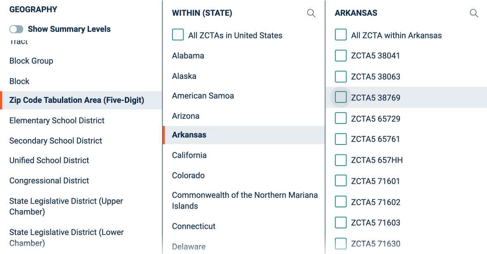

CEDSCI
Zach Whitman
Quick CEDSCI overview
We're an enterprise program that focuses on dissemination.
We're responsible for disseminating Census Bureau data.
We're building two product lines:
1. Data/metadata API services
{
@context: "https://project-open-data.cio.gov/v1.1/schema/catalog.jsonld",
@id: "https://api.census.gov/data/1999/nonemp.json",
@type: "dcat:Catalog",
conformsTo: "https://project-open-data.cio.gov/v1.1/schema",
describedBy: "https://project-open-data.cio.gov/v1.1/schema/catalog.json",
dataset: [{
c_vintage: 1999,
c_dataset: ["nonemp"],
c_geographyLink: "https://api.census.gov/data/1999/nonemp/geography.json",
c_variablesLink: "https://api.census.gov/data/1999/nonemp/variables.json",
c_tagsLink: "https://api.census.gov/data/1999/nonemp/tags.json",
c_examplesLink: "https://api.census.gov/data/1999/nonemp/examples.json",
c_groupsLink: "https://api.census.gov/data/1999/nonemp/groups.json",
c_valuesLink: "https://api.census.gov/data/1999/nonemp/values.json",
c_documentationLink: "http://www.census.gov/developer/",
...,
]}
}
2. Data dissemination applications
data.census.gov and mdat are just the start
Where we began
Where we are
Where we're going
Why are we doing this?
Centralized data access
Standardized user interactions
Consolidated business logic
But the main driver is to be responsive to our users
How are we approaching this?
Minimize one-off deliveries and duplicative ETL
Drive all data via API services
Consolidate UI components
Build applications through templates
Our process
We've moving expertise upstream
That means we're no longer creating content
The pros are data consistency, assurance, interoperability, and reliability
The cons are it takes greater coordination and it's slower
Example: pseudogeos
What we've seen
What we've heard

What we've understood
We need to focus on the usability - particularly for faceted filtering
We need better exports
We need to improve search
We're hiring
We're looking for
- Backend
- Frontend
- Interaction design
- Data scientists
Thank you for continuing to help us improve the platform!
cedsci.feedback@census.gov uscensusbureau.slack.comDemo time
If there's time